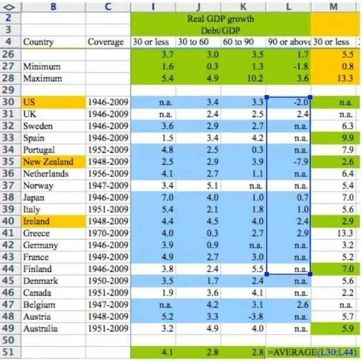
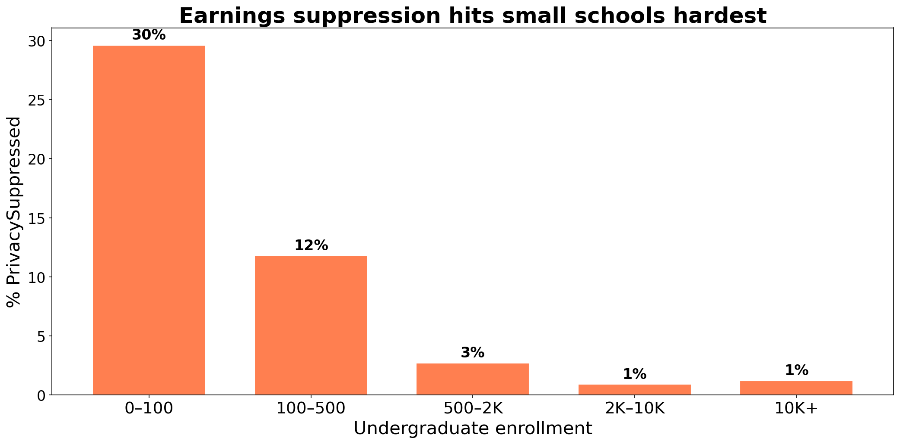
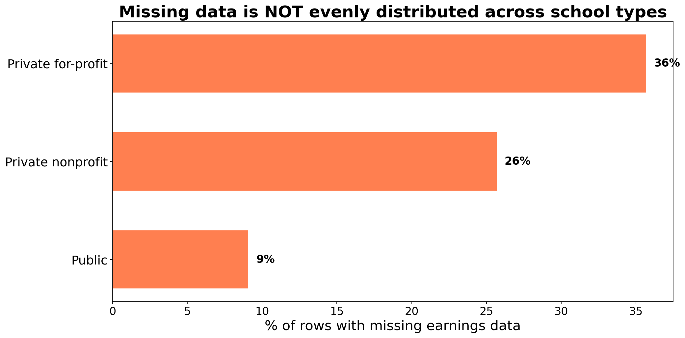

Lecture 3: Data munging
Applied Statistics: From Data to Decisions
Professor Madeleine Udell
Monday, April 6, 2026
concept check from last time
df.describe() says the Airbnb price column has 3,818 values
df.shape says the DataFrame has 4,229 rows
Q: where did the other 411 rows go?
.describe() silently skips NaN — 411 listings have missing prices- always compare
.describe() counts against .shape
a cell range dragged one row too short. austerity budgets for millions of people.
Reinhart & Rogoff (2010) — Excel error discovered by Thomas Herndon, UMass Amherst
the spreadsheet

=AVERAGE(L30:L44) — but the data goes to row 49
three data disasters
Reinhart-Rogoff (2010)
cell range one row too short
→ austerity budgets for millions
Public Health England (2020)
.xls row limit: 65,536
→ 15,841 COVID cases lost, contacts never traced
gene naming (2016–2020)
SEPT1 → “1-Sep”
→ 20% of genomics papers corrupted, 27 genes renamed
all three are bugs — but in a spreadsheet, the bug is invisible
why we write code
spreadsheets hide logic
- formula in cell G47 excludes rows
- dragged range stops one row short
- no one notices unless they click every cell
code makes decisions visible
- every drop, coerce, join is a readable line
- when wrong, the bug is findable
- when right, the logic is reproducible
good code is deterministic. same script, same data → same answer every time.
AI analysis vs. AI-assisted code
| cleaning decisions |
hidden |
visible as lines you can read |
| reproducibility |
different answers each session |
deterministic |
| what you learn |
nothing about the data |
everything about the data |
use AI to write code, not to replace understanding
today’s concepts
every cleaning decision changes the answer
- missing data — the many forms, MCAR / MAR / MNAR
- joining datasets — inner vs. left, one-to-many
- strings and deduplication — standardization, the birthday paradox
- when tools betray you — handling missing data, coercion traps, AI-assisted code
recap: what we found last time
- Airbnb data: relatively tidy, NaN for missing values
- pandas handled it transparently:
.isna(), .describe()
- but we noticed some dtypes looked wrong…
today: real datasets are rarely so cooperative
- the many faces of missing data
today’s dataset: College Scorecard
- US Department of Education
- 7,703 institutions, 122 columns
- SAT scores, enrollment, earnings, debt
- data dictionary, methodology, public updates
. . .
contrast: a random CSV on Kaggle with no documentation
data provenance
the chain of custody from data collection to your notebook
- documented methodology? ✓
- data dictionary defining every column? ✓
- known collection procedures? ✓
- public and versioned? ✓
in the AI era: synthetic datasets, undocumented web scrapes, training data contamination
Stanford in the Scorecard
the Scorecard website says Stanford median earnings = $136,000 (4 years after completing)
but program-level data tells a different story:
| Business Admin |
Master’s |
$262K |
| Computer Science |
Master’s |
$256K |
| Human Biology |
Bachelor’s |
$82K |
| English Literature |
Bachelor’s |
$82K |
| Ethnic Studies |
Bachelor’s |
$46K |
$136K is a weighted average dominated by large graduate programs
navigating a data dictionary
the College Scorecard dictionary: 3,308 variables across 8 tabs
CONTROL |
institution type: 1=Public, 2=Private nonprofit, 3=Private for-profit |
MD_EARN_WNE_P10 |
median earnings of students working and not enrolled, 10 years after entry |
PREDDEG |
predominant degree: 0–4 coded as integers, but the values are categories |
OPEID |
defined as a string — store as integer and you lose leading zeros |
CONTROL = 2 looks numeric. mean(CONTROL) = 1.7. what does that mean?
a column that should be numeric
MD_EARN_WNE_P10 — median earnings, 10 years after entry (working and not enrolled)
Q: why would an earnings column be stored as a string?
the culprit: PrivacySuppressed
Non-numeric values in 'MD_EARN_WNE_P10':
PrivacySuppressed 480
- a string sitting in a numeric column
- cohort too small → Department of Education suppresses data to protect privacy
- pandas treats the whole column as
str
the missingness zoo
NaN, None |
standard pandas |
yes |
"" (empty string) |
CSV exports |
no |
"N/A", "NA" |
manual data entry |
sometimes |
"PrivacySuppressed" |
government data |
no |
-999, 99, 0 |
sensors, surveys |
no |
| absent rows |
panel/time-series |
no rows to detect |
chapter 2 covered row 1. everything else requires active detection.
why categories are stored as integers
CONTROL: 1 = Public, 2 = Private nonprofit, 3 = Private for-profit
why not store the string?
"Management Science and Engineering" = 37 bytes7 = 1 byte
across 7,703 rows × hundreds of columns, integer codes cut storage by 10–50×
the tradeoff: you need the data dictionary to know what the numbers mean
Demo: College Scorecard exploration
open in Colab
missingness is not random

three patterns of missingness
- MCAR: no pattern — mold destroys random records
- MAR: depends on observed data — SAT scores missing because school doesn’t require them (degree type is recorded)
- MNAR: depends on the missing value itself — sickest patients don’t report
College Scorecard earnings: MNAR
small cohort → suppressed → small schools are systematically different
classify each scenario as MCAR, MAR, or MNAR:
- a lab assistant drops a tray; 12 random blood samples are destroyed
- SAT scores are missing for most certificate programs in the Scorecard
- College Scorecard suppresses earnings when the cohort is too small
data leakage
suppose you want to predict graduation rate from admission data
the Scorecard has COMP_ORIG_YR4_RT (4-year completion rate) and MD_EARN_WNE_P10 (earnings 10 years later)
if you include earnings as a predictor of graduation… you’re using the future to predict the past
when your model accidentally sees information from the future or the target variable
why join?
the Scorecard comes in two files:
scorecard.csv — one row per institution (SAT, enrollment, earnings)field_of_study.csv — one row per school-program pair (earnings by major)
richer questions require combining tables
- “do engineering programs pay more than humanities at the same school?”
- “should I take on more debt for a prestigious school?”
joining = matching rows by a shared key
pd.merge(left, right, on='key') # match rows where key values agree
two flavors:
- inner join — keep only rows with a match in both tables
- left join — keep every row from the left table; fill
NaN where no match exists
inner join vs. left join: a toy example
Students
| Alice |
101 |
| Bob |
102 |
| Carol |
103 |
Majors
| 101 |
Physics |
| 102 |
English |
| 104 |
History |
Q: which students survive an inner join on major_id?
inner join: only matching rows
Inner join result
| Alice |
101 |
Physics |
| Bob |
102 |
English |
- Carol is gone (no match for 103)
- History is gone (no match for 104)
- only IDs in both tables survive
diagram: Wickham & Grolemund, R for Data Science
left join: keep all left rows
Left join result
| Alice |
101 |
Physics |
| Bob |
102 |
English |
| Carol |
103 |
NaN |
- all three students survive
- Carol’s major becomes NaN (no match)
- History still dropped (not in left table)
one-to-many: row multiplication
Right (3 rows)
| A |
X |
| A |
Y |
| A |
Z |
. . .
Result: 2 × 3 = 6 rows
| L1 |
A |
X |
| L1 |
A |
Y |
| L1 |
A |
Z |
| L2 |
A |
X |
| L2 |
A |
Y |
| L2 |
A |
Z |
every key matches → inner join = left join here. the difference only shows when keys are missing.
defense: check your key before joining
assert scorecard['UNITID'].is_unique, \
"UNITID is not unique — join will multiply rows!"
an assert that passes is documentation
an assert that fails is an alarm
- scorecard: 7,703 institutions
- programs: 228,000 rows across 5,500 institutions
- predict: how many rows will the inner join produce?
- more or fewer than 7,703?
Demo: join explosion
open in Colab
after every join: check row counts
print(f"Scorecard rows: {scorecard.shape[0]:,}")
print(f"Inner join rows: {inner.shape[0]:,}")
print(f"Left join rows: {left.shape[0]:,}")
| inner |
yes (one-to-many) |
yes (unmatched keys) |
both at once |
| left |
yes (one-to-many) |
no |
NaN for unmatched |
the join type is a decision, not a default
- strings and deduplication
string standardization
scorecard['INSTNM'].value_counts().head()
University of Phoenix-Arizona 1
University Of Phoenix-Arizona 1
UNIVERSITY OF PHOENIX - ARIZONA 1
scorecard['INSTNM_clean'] = (scorecard['INSTNM']
.str.lower()
.str.strip()
.str.replace(r'\s+', ' ', regex=True))
lowercase → strip → collapse whitespace. every merge and groupby depends on this.
quick poll: voter registration
- ✋ who is registered to vote here (Santa Clara County)?
- ✋ who is registered at home (where your parents live)?
- ✋ who canceled their previous registration when they registered here?
- ✋ who plans to vote here? there? …both places?
when is a duplicate not a duplicate?
US voter registration: 104 million records across 50 states
match on name + date of birth → 761,875 apparent duplicates
Q: are these really the same person?
Goel, Meredith, Morse, Rothschild & Shirani-Mehr, “One Person, One Vote,” APSR 2020
the birthday paradox strikes
suppose 141 voters named “John Smith” were born in 1970
- expected matching-birthday pairs: \(\binom{141}{2} \times \frac{1}{365} \approx 27\)
- that’s 27 “double voters” — from one common name in one birth year
scale this across every name in the country: most of those 762K matches are coincidences
deduplication is a value judgment
- merge too aggressively → remove legitimate distinct records
- merge too conservatively → count the same entity twice
in the voter file: canceling registrations by name+DOB match would disenfranchise 300+ legitimate voters per double vote prevented
the same tradeoff appears everywhere:
- patient records across hospitals
- customer records across systems
- College Scorecard branch campuses (same
OPEID6, different UNITID)
three approaches to missing earnings
same question: “what is the average median earnings?”
| drop rows |
dropna(subset=['earnings']) |
$42,290 |
removes schools from all columns |
| fill with mean |
fillna(mean_val) |
$42,290 |
shrinks std, distorts correlations |
| ignore NaN |
pandas default (.mean() skips NaN) |
$42,290 |
preserves full DataFrame |
same mean — but dropping rows changes which schools remain in your sample
the damage shows in group comparisons

dropping rows with missing earnings changes which schools remain
an AI assistant “cleans” the College Scorecard by calling .dropna()
- it reports the average earnings is $45,000
- name two questions you’d ask before trusting that number
- focus on what was lost in the cleaning step
when coercion erases distinctions
imagine an income column with these non-numeric values:
"PrivacySuppressed" |
cohort too small |
">100,000" |
top-coded (Census) |
"<LOD" |
below limit of detection |
"Refused" |
survey respondent declined |
"N/A" |
question didn’t apply |
pd.to_numeric(errors='coerce') turns all five into NaN
five different reasons for missingness → one undifferentiated blank
sentinel values
-999 and 999999 aren’t missing — they’re wrong
Mean WITH sentinels: -208.6°F
Mean WITHOUT sentinels: 72.9°F
unlike NaN, sentinel values participate in every computation without warning
the identifier trap
OPEID 00102100 → stored as integer → becomes 102100
- leading zeros vanish
- later join against zero-padded strings: zero matches, no error
ZIP codes, phone numbers, IDs — codes, not numbers
this code merges two tables and computes mean earnings. it has at least four bugs.
merged = pd.merge(scorecard, programs, on='UNITID')
mean_earn = merged['EARN_MDN_4YR'].mean()
find as many as you can. for each, explain what goes wrong and how to fix it.
data munging checklist
- check provenance — where did the data come from?
- check types — any
str columns that should be numeric?
- find the missing data — NaN, sentinels, string placeholders, absent rows
- understand why data is missing — MCAR, MAR, MNAR?
- check joins — row counts after every merge. assert.
- standardize strings — lowercase, strip, collapse variants
- verify type conversions — how many values became NaN?
- compare groups — is missingness evenly distributed?
“the combination of some data and an aching desire for an answer does not ensure that a reasonable one can be extracted from a given body of data.”
— John Tukey
synthesis
- missing data hides in many forms —
NaN is just the easy case; MNAR is the dangerous one
- joins can grow or shrink your data — check row counts after every merge
- strings and deduplication — standardize before matching; the birthday paradox generates false positives at scale
- tools betray you — coercion erases distinctions, dropping rows changes the sample, code makes every decision visible
next time: linear algebra
we can clean and join data. now we need a language for modeling it.
- vectors as data points, vectors as features
- linear combinations → predictions
- span → what a model can reach
preview: Chapter 4 in the course notes
before next class
- fill out the homework discussion section scheduling survey (see Ed)
- read Chapter 3 in the course notes
- try the notebook exercises on your own
- Quiz 1 is Wednesday — covers Lectures 1-3. be on time!
one-minute feedback
- what was the most useful thing you learned today?
- what was the most confusing?
give feedback